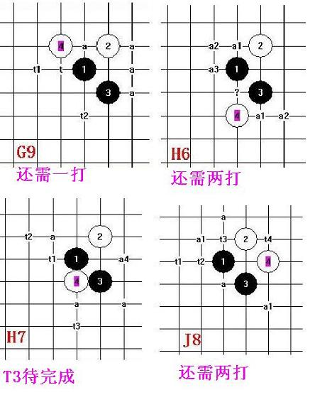
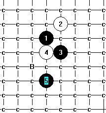

还有四个蒲月图,大家推荐几个四打五打
首页
五子棋交流
#1 还有四个蒲月图,大家推荐几个四打五打 作者：安娜制作所 发表时间：2010-11-3 10:57:22

这个杀法提供一个7

#2 Re:还有四个蒲月图,大家推荐几个四打五打 作者：米 发表时间：2010-11-3 12:03:06
=======上图对应的爱五子棋谱代码如下，以便你拆解：========
h8i9i7h7h5g6j6k5f5g5g4
======================================================由于白2位置防守作用小，图中标记B的点黑速胜。白10如果走k7黑就走g5杀。
#3 Re:还有四个蒲月图,大家推荐几个四打五打 作者：安娜制作所 发表时间：2010-11-3 12:13:02
米老师好! 10=I5 黑如何胜
#4 Re:Re:还有四个蒲月图,大家推荐几个四打五打 作者：米 发表时间：2010-11-3 12:23:01
10=i5,则11=g4或f4都可以必胜，白2闲置几乎差了一手棋，防不住。
#5 Re:Re:Re:还有四个蒲月图,大家推荐几个四打五打 作者：岳麓小棋后 发表时间：2010-11-3 12:28:09
=======上图对应的爱五子棋谱代码如下，以便你拆解：========
h8i9i7h7
======================================================图中T1T2T3都是必胜的，一个通岚月，一个通花月，还一个通大寒星，在论坛搜搜这些资料就地毯了
#6 Re:还有四个蒲月图,大家推荐几个四打五打 作者：知布 发表时间：2010-11-3 12:28:50
右下角那谱的t1,t2我有谱，不过威望不够，你哪个变化没解决？
#7 Re:还有四个蒲月图,大家推荐几个四打五打 作者：安娜制作所 发表时间：2010-11-3 13:13:15
直接把右下角的T1,T2,发到我邮箱8! 谢谢! atna88@qq.com